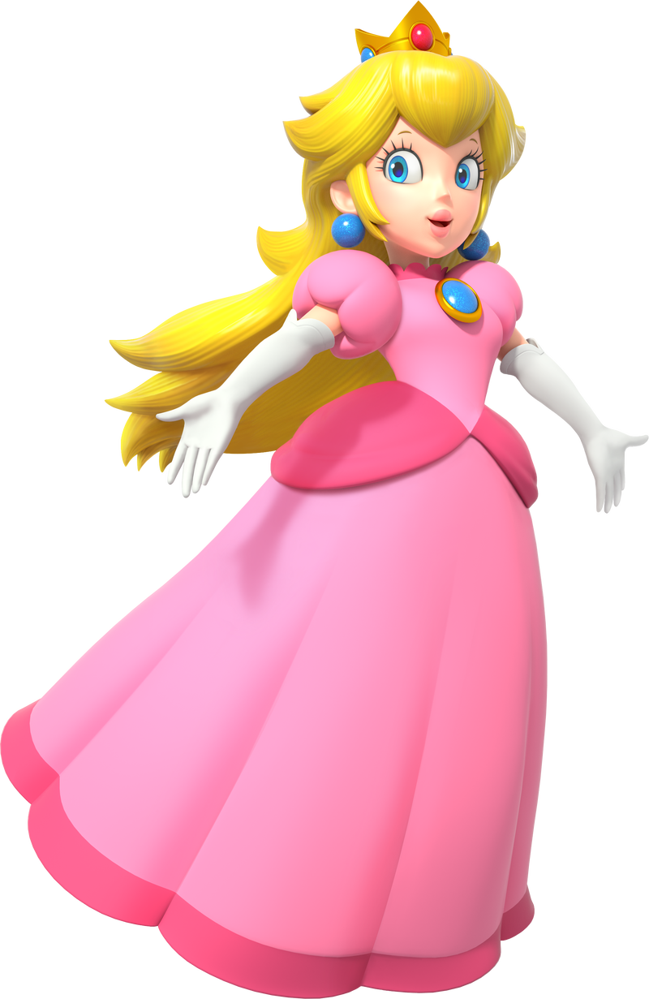

<!DOCTYPE html>
<html>
    <head>
        <title>Wiki Bros</title>
        <meta charset="UTF-8">
        <script src="../script/script.js"></script>
        <link href="../style/style.css" rel="stylesheet">
    </head>
</html>
<body>
    <header>
        <h1 onclick="changerOnglet(document.getElementById('introduction'))">Accueil</h1>

        <nav>
            <div class="navigationOnglet" onclick="changerOnglet(document.getElementById('personnages'))"><div class="overlayText">Personnages</div></div>
            <div class="navigationOnglet" onclick="changerOnglet(document.getElementById('jeux'))"><div class="overlayText">Jeux</div></div>
            <div class="navigationOnglet"><div class="overlayText">Quiz</div></div>
        </nav>
            
    </header>   

    <div id="introduction" class="onglet">
        <article class="description">
            <section>
                <h2>Mario, c'est quoi ?</h2>
                <p>Mario est une franchise emblématique de jeux vidéo développée par Nitendo</p>
                <p>Elle met en scène Mario, un plombier italien moustachu, et ses amis.</p>
                <p>Créé par <strong>Shigeru Miyamoto</strong>, Mario est rapidement devenu la mascotte de nitendo.</p>
                <p> Sa franchise se décline en de nombreux jeux, surtout des jeux de plateformes, mais aussi des jeux de sports ou des jeux automobiles.</p>
            </section>
            
        </article>

        <article class="description">
            
            <section>
                <h2>Naissance de la franchise</h2>
                <p>Mario est apparu pour la première fois en 1981 dans le jeu Donkey Kong, sous le nom de Jumpman.</p>
                <p>En 1985, Nitendo lance <i>Super Mario Bros</i> sur la NES, où Mario est le personnage principal</p>
            </section>
        </article>

        <article class="description">
            <section>
                <h2>Ventes et popularité</h2>
                <p>L'un des personnages les plus populaires et reconnaissable dans le monde, Mario a permis la vente de plus de <strong>800 millions de jeux</strong>, obtenant le titre de franchise de jeu vidéo la plus vendue de l'histoire.</p>
                <p>Des jeux mémorables comme <i>Super Mario Bros</i>, <i>Mario Kart</i> ou <i>Super Mario Odyssey</i> sont en grande partie la raison de son grand succès.</p>
            </section>
            
        </article>
    </div>

    <div id="jeux" class="onglet">
        <article id="jaquettes">
            <a href="super-mario-odyssey.html" class="Jeux_Accueil">
                <div class="shadow"></div>
                
            </a>
            <a href="super-mario-galaxy.html" class="Jeux_Accueil">
                
            </section>
            <a href="#" class="Jeux_Accueil">
                
            </section>
            <a href="#" class="Jeux_Accueil">
                <div class="shadow"></div>
                
            </section>
            <a href="#" class="Jeux_Accueil">
                
            </section>
            <a href="#" class="Jeux_Accueil">
                
            </section>
        </article>
    </div>

    <div id="personnages" class="onglet">
        <article id="cards-collection">
            <a href="#" class="card" id="Mario">
                <div class="card-background"></div>
                
            </a>
            <a class="card" id="Harmonie">
                <div class="card-background"></div>
                
            </a>
            <a class="card" id="Luma">
                <div class="card-background"></div>
                
            </a>
            <a class="card" id="Peach">
                <div class="card-background"></div>
                
            </a>
            <a class="card" id="Bowser">
                <div class="card-background"></div>
                
            </a>
            <a class="card" id="Luigi">
                <div class="card-background"></div>
                
            </a>
            <a class="card" id="Bowser_Jr">
                <div class="card-background"></div>
                
            </a>
            
            

        </article>

    </div>

    <footer>
        <p>Fait par Yiannis LEBLANC et Raphaël LAURENT</p>
    </footer>
</body>